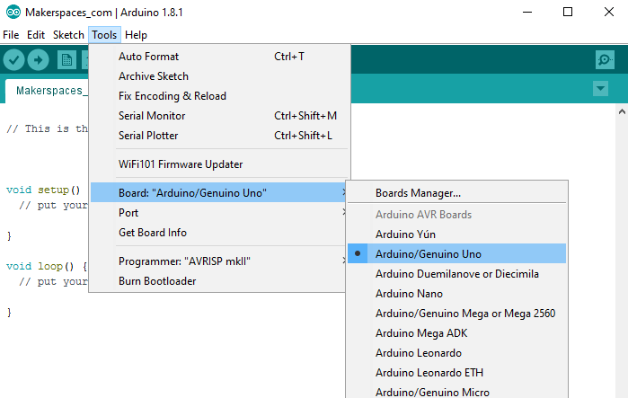
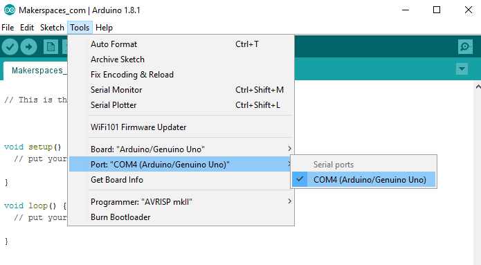

Before you can start working with Arduino, you need to make sure you have the IDE software installed on your computer. This program allows you to write, view and upload the code to your Arduino Uno board. You can download the IDE for free on Arduino’s website.
Once the IDE is installed, you will need to connect your Arduino to your computer. To do this, plug one end of the USB cable to the Arduino Uno and then the other end of the USB to your computer’s USB port.
Select The Board
Once the board is plugged in, you will need to open the IDE and click on Tools > Board > Arduino Uno to select the board. 
Select Serial Port
Next, you have to tell the Arduino which port you are using on your computer. To select the port, go to Tools > Port and then select the port that says Arduino.
Project Code
To complete the projects in this tutorial, you will need to download the project code which are known as sketches. A sketch is simply a set of instructions that tells the board what functions it needs to perform. For some of these projects, we are using open-source code that was released by the good people at Sparkfun and Arduino. Use the link below to download the zip folder containing the code.
Download Project Code - (ZIP File)